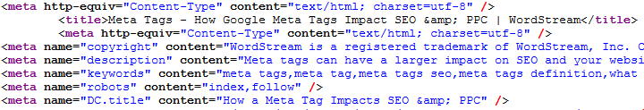
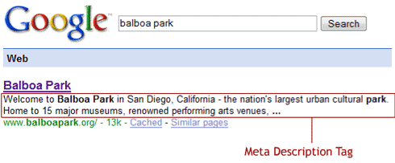

What is an SEO?
SEO stands for search engine optimization
- Marketing technique that helps your site rank higher than others
- Most people search keywords to find a product or place before buying, most people will go with results on top of the list.
- Without SEO, your page will never be found by customers, consumers, etc
- Search engines have two major functions: crawling and building an index, and providing search users with a ranked list of the websites they've determined are the most relevant.
How does an SEO work?
Search engines, what the search engines are looking for and why it’s important. The search engine system collects info from web pages and helps find keywords on the web The search engine will narrow the results to show pages that contains the words searched for.
What Search Engines Are Looking For?
Search engines want to do their jobs as best as possible by referring users to websites and content that is the most relevant to what the user is looking for. So how is relevancy determined?- Content: Is determined by the theme that is being given, the text on the page, and the titles and descriptions that are given.
- Performance: How fast is your site and does it work properly?
- Authority: Does your site have good enough content to link to or do other authoritative sites use your website as a reference or cite the information that’s available?
- User Experience: How does the site look? Is it easy to navigate around? Does it look safe? Does it have a high bounce rate?
Onpage SEO
There are 3 Main aspects:#1 Design:
- Have meaningful content
- Phenomnal UX
- Built to be shared
- Bot acessable
- Knowing target audience and how to tailor your site specifically to them, use relevant pictures
#2 Content:
Keyword researchKeyword Research is one of the most important parts of SEO. It is defined as identifying which phrases are used on search engines when people are looking for information. Several tools to help us out with research within in keyword research including: Google keyword tool, google insights, keyword spy, Hubspot, keyword app, etc. Once you know which words and phrases are most frequently searched by consumers and crawlers, you will be able to implement these strategies into your content.
Meta tags and Implementation:
- 
- The title tag is the most important thing on the page. Here you will use the #1 keyword that you researched. You will use the business or site name in the secondary position
- Meta description: primary keywords, company name, or compelling description that the searcher will want to click 
- Keyword tags: keywords that are relevant to the page. Use them for misspellings, keywords, and are no more than 10 keywords. Google doesn't use keyword rankings in its algorithm because it is easy to abuse
H1 and ALT tags
- H1 tags: Second most important thing on a website according to some. Use the #1 keyword. Google bots scan these second.
- ALT tags: used for visually impaired, cannot be longer than 70 characters Short description of image using keywords
- Picture file names: try to name files using relevant keywords to the photo and content
- Additional Content: Establish a main focus for each page Use first meta tags and H1 tags to determine the focus Use keywords and strive for a good user experience
#3 Coding
Try and keep it tidy and error free Use XML (data that is readable by bots or crawlers)Off page SEO
- Linking Strategy Having other people link your site on their page
- Examples: blogs, social media, being newsworthy, or buying paid links.
- The higher the trust rank of page, the more beneficial it is to you as there is not as much spam percentage.
- Social Media, Search Engine Marketing, Email Marketing Marketing tools to gain exposure
In conclusion
- Seo is a marketing technique that helps your site rank higher than others
- Use keyword Research tools
- Use Meta, Alt and H1 tags
- Make your site Bot accessible